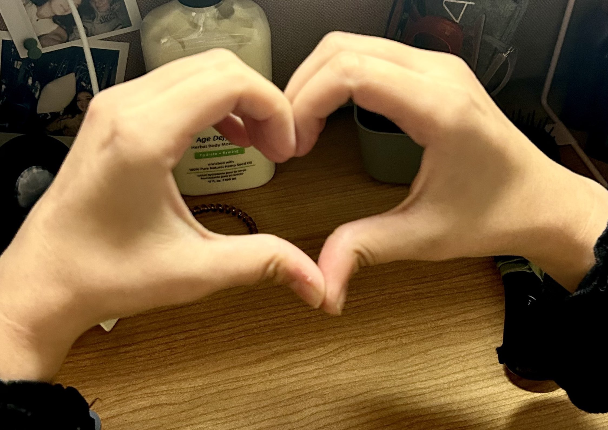

Procreate Hand Drawing
Created Fall 2023
This piece was part of a 12 week constant output project. Every week we would create something slightly different within the same theme. For this week, I used procreate to recreate the hands. I drew over the picture using different shades of pink to create a monotone drawing.
